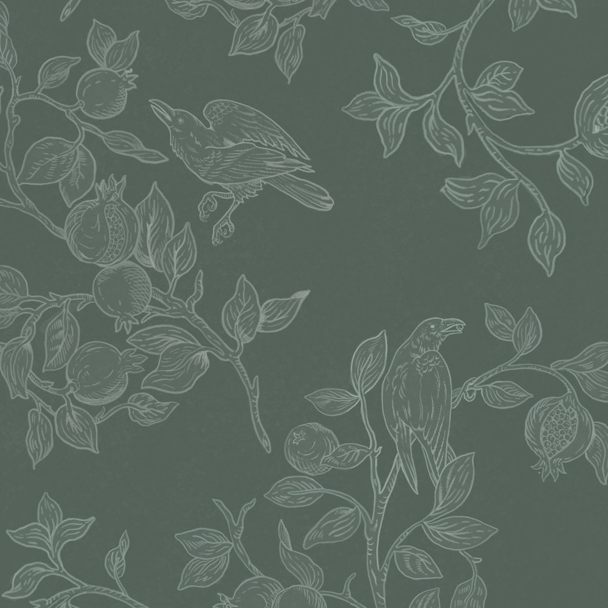
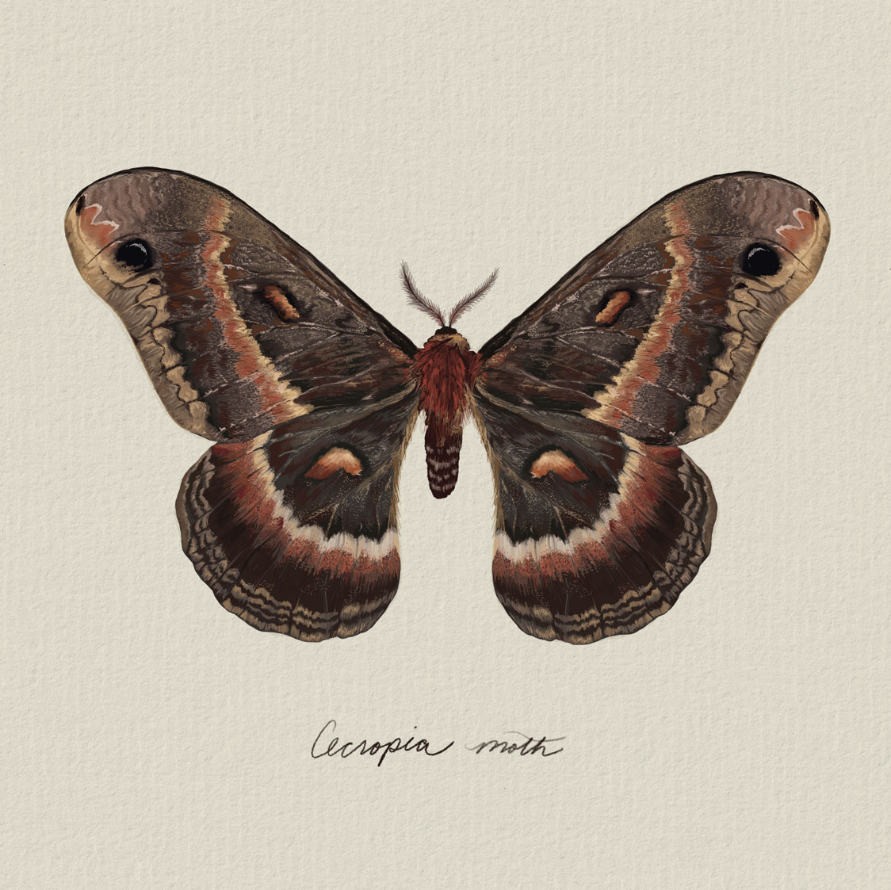
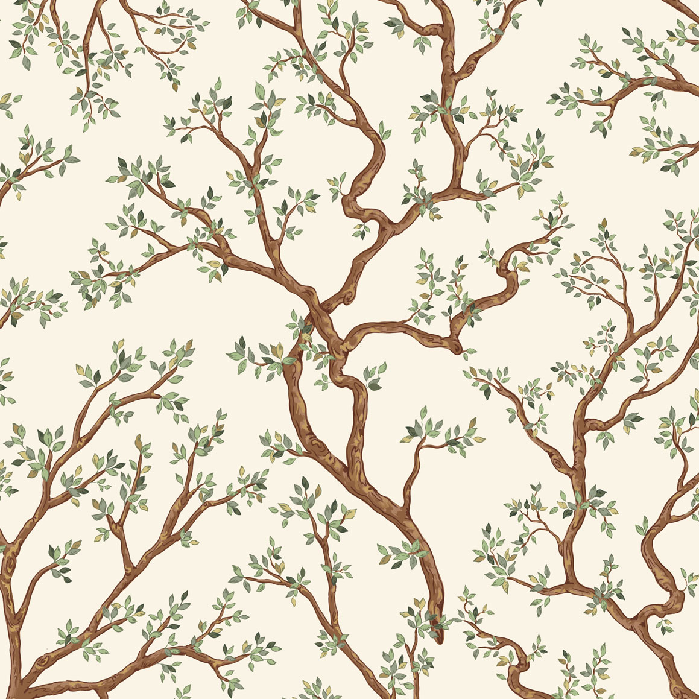
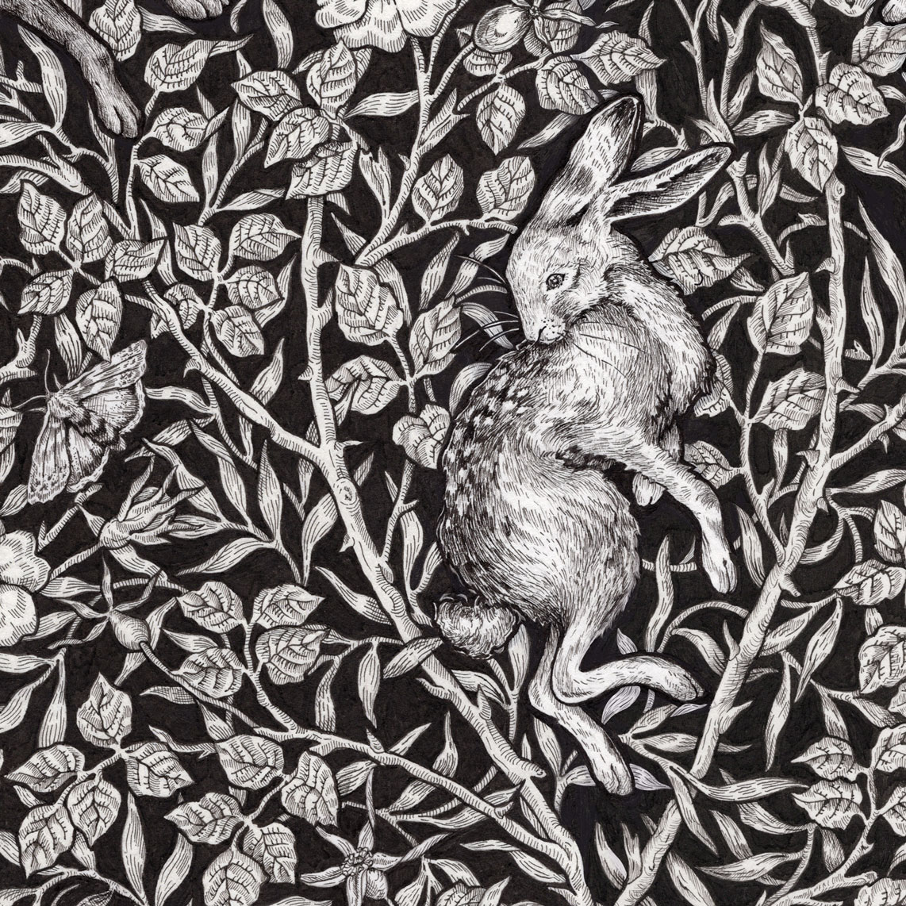
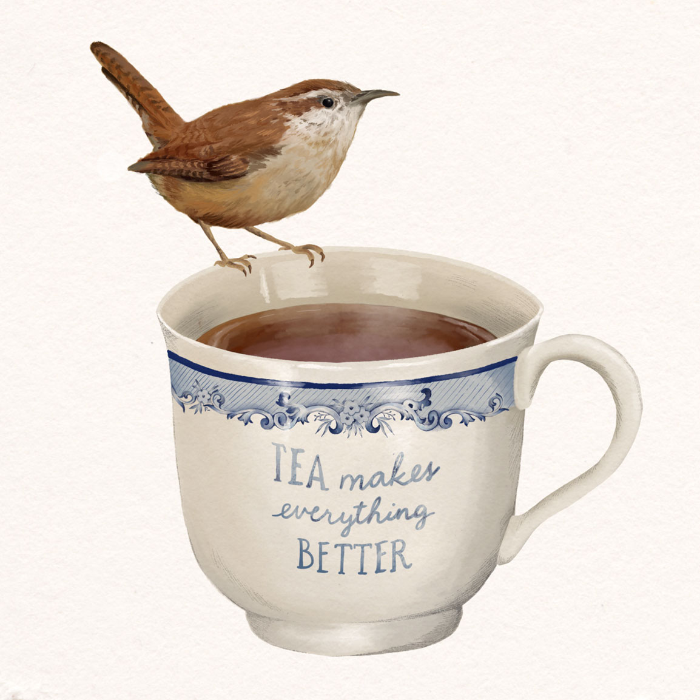
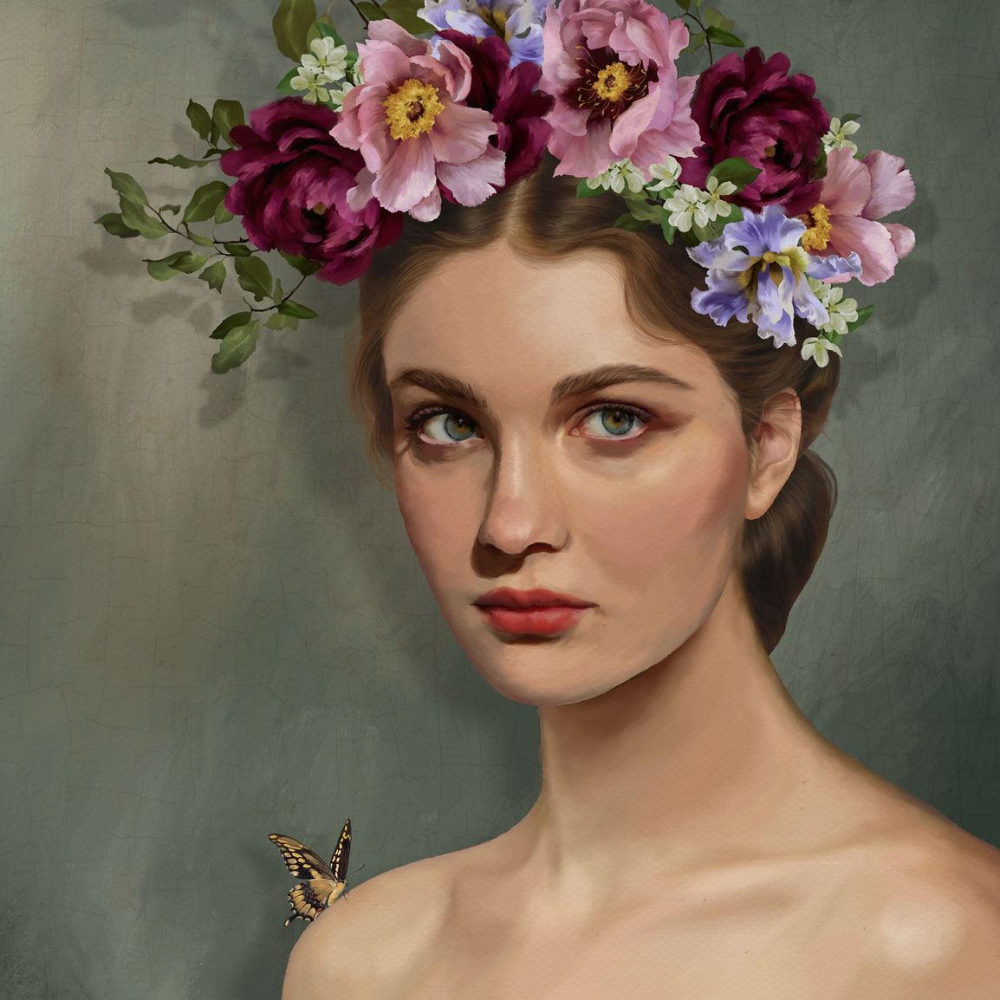
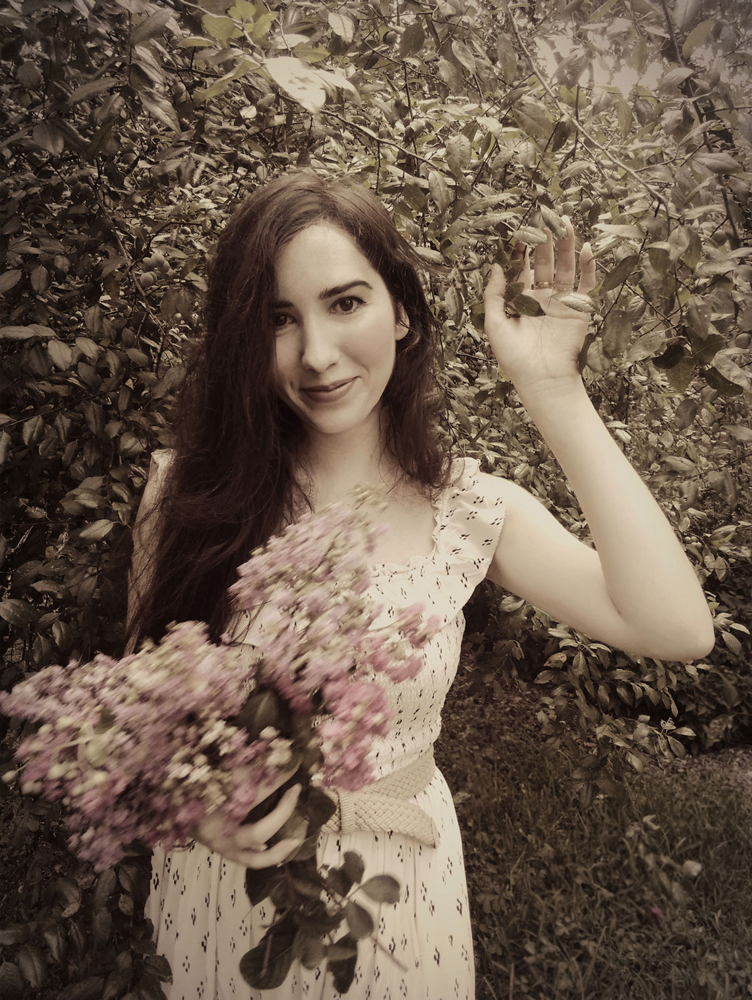

Step into the painted reverie of Johanna's studio, where ink, watercolor, and memory intertwine. The artist's work captures the delicate poise of a bygone era— pressed flowers, moonlit gardens, and quiet pages from an Edwardian field journal. Each illustration is a love letter to the natural world, rendered with a romantic heart and the soft melancholy of nostalgia.

"The poetry of the earth is never dead."
— John Keats

A pattern inspired by the untamed hedgerows and wild gardens that flourish beyond the reach of careful cultivation. Rendered in deep, verdant green, each motif captures the quiet abundance of leaf and bloom growing exactly as nature intended — dense, tangled, and alive with movement. "Hortensia Green" invites the viewer into a landscape where beauty is found not in order, but in the wild grace of things left to grow.

A study inspired by the meticulous illustrations found in the field journals of nineteenth-century naturalists, where every specimen was rendered with scientific devotion and quiet reverence. This piece captures the cecropia moth in fine detail — its wings a study in symmetry, pattern, and the fleeting nature of beauty built to last only a season. "Entomology" invites the viewer to look as the early naturalists did: closely, patiently, and with wonder.

A collection of illustrations devoted to the beauty and order of the rooted world — from delicate wildflowers to towering trees. Inspired by Carolus Linnaeus and his Systema Naturae, these works celebrate the quiet intelligence of earth’s creation. Each piece invites the viewer to pause and study the elegance of growth, form, and taxonomy — where art and science intertwine.

A collection of intricate ink illustrations inspired by the antique etchings found in natural history volumes of centuries past. These works capture the timeless dialogue between art and observation— where every line reveals the delicate precision of nature’s patterns. Featuring motifs of fauna and flora, "Etchings" invites the viewer to see through the eyes of early naturalists and illustrators who sought to immortalize the world in ink.

A piece inspired by the gentle rituals that punctuate an ordinary day — the pour of tea, the pause before it's taken. A wren rests on the rim of a well-worn cup, as if it, too, had paused to enjoy the quiet. "Wrensong" invites the viewer to slow down, if only for the length of a cup, and find contentment in the smallness of things.

A portrait inspired by the romantic naturalism of pre-Raphaelite painting, where beauty and wildness were never held apart. A crown of peony and wildflower crowns the subject, worn with the ease of something gathered rather than arranged. "Midsummer" invites the viewer to consider beauty not as artifice, but as something true, found growing wild in the fullness of the season.

Johanna is an artist, illustrator, and visual storyteller whose work is rooted in a deep appreciation for the quiet poetry of nature, history, and the beauty found in everyday life. Shaped by years spent tending gardens and closely observing the natural world, she creates through watercolor, digital painting, illustration, and graphic design, capturing fleeting moments with a sense of wonder, curiosity, and thoughtful craftsmanship.
Creativity has long been woven into her family's story, nurtured in part by her grandfather, an oil painter whose passion for art inspired her own creative journey. She holds a Bachelor of Arts in Fashion Design & Merchandising and brings a multidisciplinary background that draws from her experience in visual storytelling through costume work in film and theatre, textile design, graphic design and fine illustration. These creative threads converge in her work, blending historical influences, artistic expression, and meticulous attention to detail to create designs and illustrations rich with narrative, texture, and emotion. Influenced from these experiences across fashion, archival research, and visual communication, Johanna approaches each project as an opportunity to uncover stories, preserve beauty, and create meaningful connections between the past and present.
"I am drawn to the stories held within forgotten details—the worn pages of a book, the delicate structure of a flower, the craftsmanship of a garment made by hand. Through art and design, I seek to preserve these moments of beauty and invite others to see the world with renewed curiosity. Art is a bridge between worlds—a way to preserve the fleeting, illuminate the overlooked, and give form to stories."